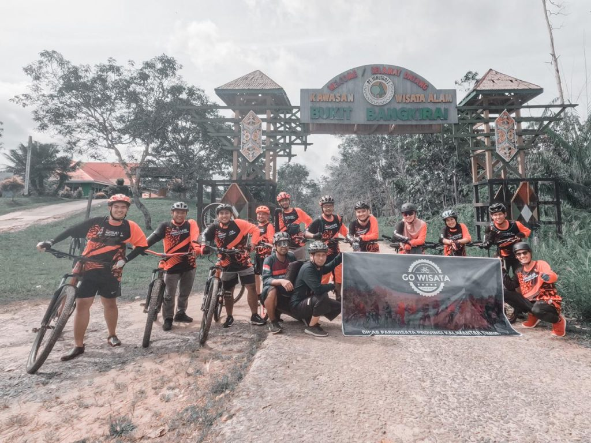

Gowisata jajal trek Kawasan Wisata Alam Bukit Bangkirai

Bersepeda dengan mountain bike (MTB) menghadirkan pengalaman yang menarik sekaligus menegangkan. Apalagi jika rute yang dilalui sangat menantang. Pengelola Bukit Bangkirai Bapak Sutiono mengatakan, trek bukit bangkirai Sejatinya sudah sering dilalui oleh para goweser di Kaltim bahkan luar Kaltim, namun ini kali pertama Komunitas Gowes sampai ke atas (Cannopy Bridge) dengan Jalur trek yang tidak biasa yang belum pernah dilalui oleh para goweser lainnya
“Hari ini merupakan kali pertama teman-teman komunitas Gowisata menjajal trek mountain bike (MTB) Bukit Bangkirai. Keistimewaan dari trek Bukit Bangkirai adalah menawarkan view panorama kawasan hutan yang masih alami dan udara yang begitu segar khas hutan tropis dan flora fauna khas Kaltim seperti burung Enggrang, owa-owa pohon bangkirai, kayu ulin, anggrek hitam dan lain sebagainya”, Ujar Setiono
Selain itu Setiono menambahkan bahwa para goweser juga disuguhkan dengan jalur yang menantang, menanjak, turunan, bergelombang yang cukup menguji adrenalin saat bersepeda menuju Kawasan Wisata Alam Bukit Bengkirai hingga sampai ke Icon Destinasi Bukit Bangkirai yakni Cannopy Bridge.
Dra. Sri Wahyuni selaku Ketua Gowisata sekaligus Kepala Dinas Pariwisata Provinsi Kalimantan Timur menuturkan bahwa untuk trek sepeda MTB ini merupakan salah satu daya dukung dari pengembangan destinasi wisata Bukit Bangkirai. “Kedepan supaya rencana untuk pengembangan trek sepeda MTB ini segera didukung dan dikembangkan agar para wisatawan yang ingin menikmati sensasi bersepeda sekaligus berwisata bahkan sambil bekerja dapat terakomodir sehingga dapat meningkatkan jumlah kunjungan wisatawan baik dalam maupun luar Kaltim”, Tutur Sri Wahyuni.